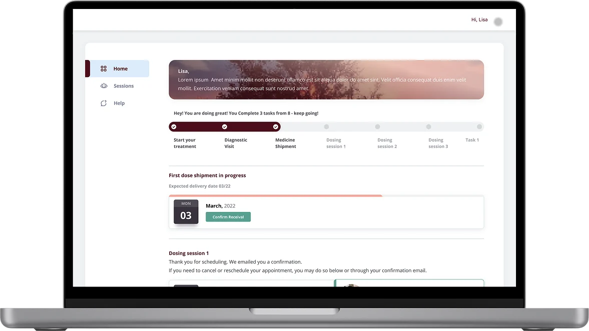
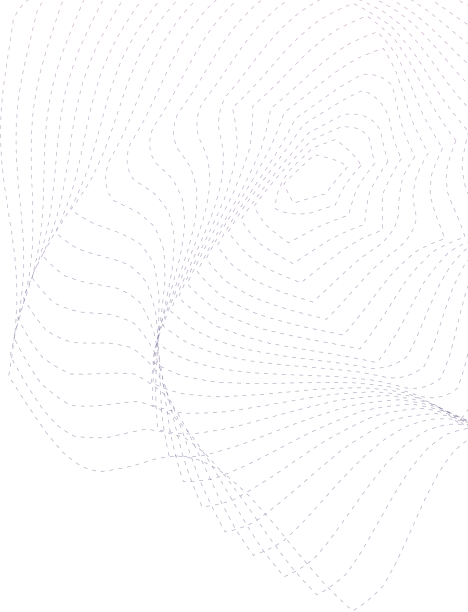

A web app that helps a pharmacy programme guide patients through ketamine therapy. It should feel like care and a personal conversation, not paperwork.
Feedback after every session
Consultations with her doctor, on time
A progress bar that shows where she is and what comes next

Project overview
Role
UI/UX Designer
Platforms
Patient web app and clinician dashboard
Engagement
Design only, by Remedy · 3-month MVP
Ketamine therapy uses low doses of a dissociative anaesthetic to treat conditions such as treatment-resistant depression, anxiety disorders and PTSD. For people in that state, comfort was the most important feature.

1.
Discovery
We had no direct access to patients, so we gathered what we needed from doctors’ notes and the programme owner, and from regulation itself.
Clinical context and regulation. Stakeholder interviews with clinicians and the programme owner; HIPAA data privacy and the protocols for controlled substances.
Key objectives. Better patient monitoring, safe administration, and tools for therapists to track and adjust treatment plans.
Similar tools and best practice. Mental health and substance therapy apps, and clinical guidance on symptom relief, side effects and dosing.
Core MVP features. Brainstormed with stakeholders, then cut to what makes treatment safe to track: reminders, symptom tracking and emergency contacts.
Flows and structure. User journeys from onboarding to follow-up, a scenario map, and an information architecture that keeps logs and notes one step away.
Designing for compliance
Secure login, encrypted data and secure messaging
A way for clinicians to record consent
Session records that meet medical audit requirements
Wireframes, then prototypes
Low-fidelity wireframes for layout and flow
High-fidelity prototypes of logging symptoms, booking sessions and checking history, to validate with stakeholders before development
Scenario map, prioritised with MoSCoW. I use it often: it tests decisions early, before screens exist.Wireframes: registration, plan, clinician match, scheduling and mood tracking.
2.
UI kit and brand identity
From design preferences and the mood board, we built a style guide, a design system and components.
We chose natural, soothing colours with gentle contrasts, to build trust without overwhelming the patient. The logo stayed as it was, to keep the company’s brand.
Every component is responsive and shows clearly which stage of a process the patient is in.
Example
The intake accordion shows not started, in progress and complete, how many questions are left and how long it will take. Progress saves automatically, so a long medical form never feels like a test.
The intake accordion, from not started to complete.
3.
Resulting solution
For patients
See which stage of the healing journey she is at
Book appointments with a doctor or consultant
Confirm dose shipments and join dosing sessions by video
Rate each session and report how she feels
Medical intake forms that are easy to fill in
For clinicians
A structured dashboard with full patient information
Communication with patients in one place
Detailed design documentation and close work with the development team made the move into build smooth.
Patient journey: address, booking, shipment, session, video call and rating.
Design outcome
Care that guides, step by step.
Researched
Built on clinical reality
Doctors’ notes, the programme owner and regulation filled the gap left by no patient access.
Scalable
A UI kit for every stage
Components that show progress clearly and grow with the product.
Handover
MVP ready to build
Patient app, clinician dashboard and documentation for the development team.